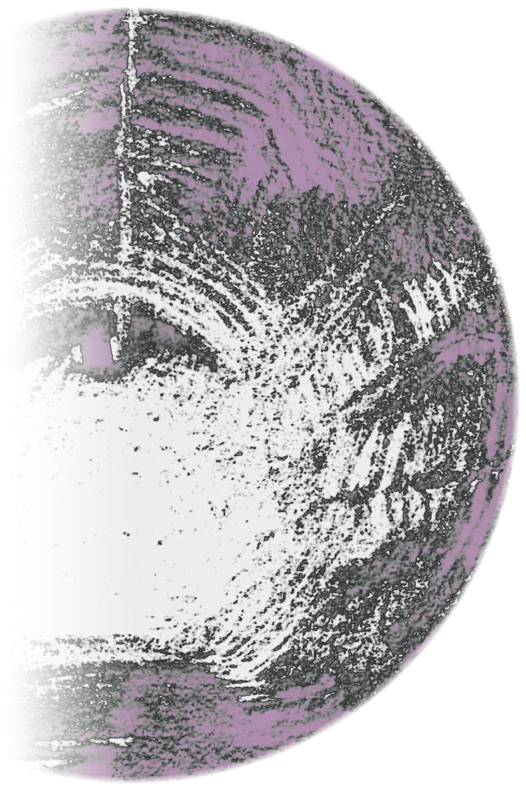
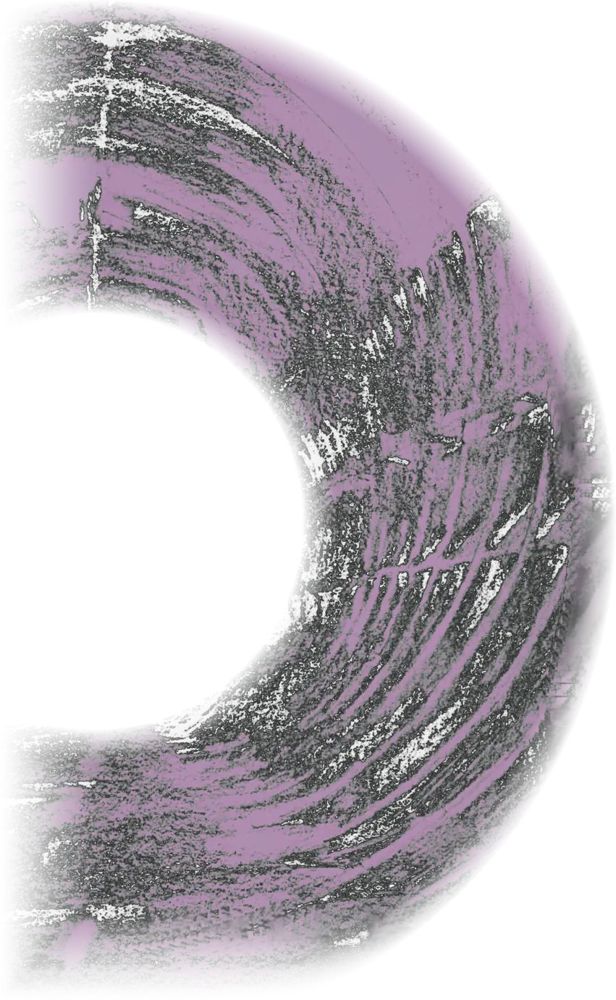
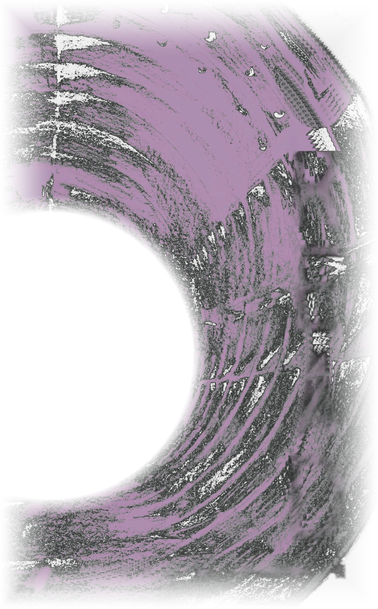
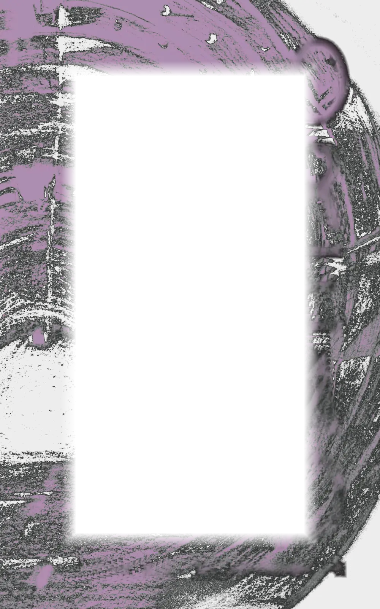

Oread
Oread is the sequel to Hamadryad, but can be read as a standalone novel.
Two hundred years have passed since the UK government instituted a bold new programme to pair every citizen with a tree. Known as the Hamadryad Charter, it created vast national forests, major civic festivals and a whole new system of personal names.
Deep in the tunnels beneath London, a community has been growing which rejects the Charter. Tensions between the two societies are rising sharply. When a lone Hamadryad finds his way into the underground, a terrible tragedy threatens to unfold.
When these worlds collide

Oread explores how people's worlds are shaped by the spaces they inhabit and the stories they are told, and what happens when these worlds collide.
Hardback, paperback and ebook.
Cover by Lydia Hall.
Come to the launch
-
Sat 14 Nov Oread launch and mystery artefact trail
2.30 to 5pm at Cheney School, Oxford. Arrive any time at main reception and follow the trail through tunnel-like corridors in the Rumble Museum to the Iris Classics Centre: drinks, books, chat, creative writing for anyone who wants a go, and maybe a reading. Tunnel travellers of all ages are welcome.
About the trail, on the Iris Project blog
Oread was launched at Cheney School, Oxford, on Saturday 14 November 2026. The next dates are on the Events page.